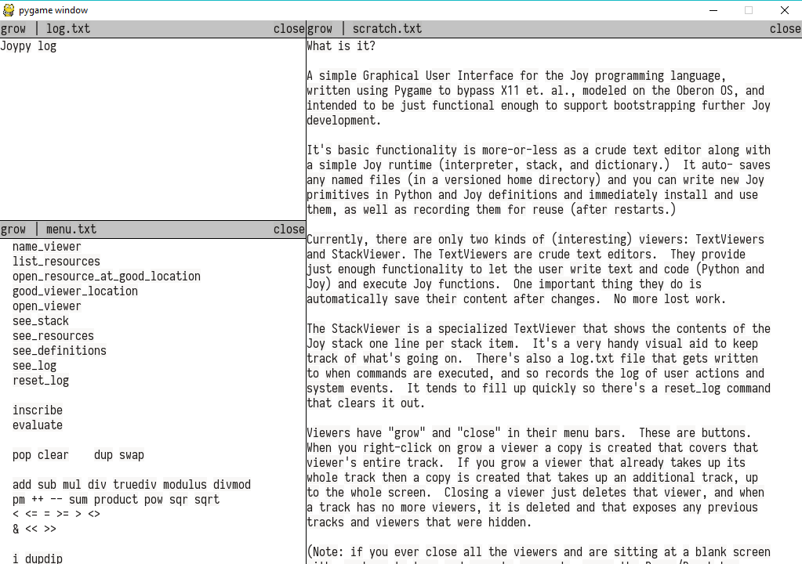
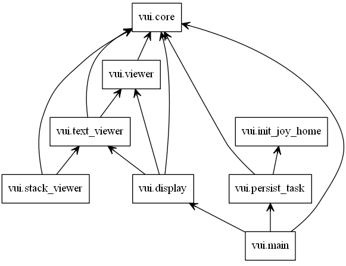

Welcome to Joy VUI’s documentation!¶
A simple Graphical User Interface for the Joy programming language, written using Pygame to bypass X11 et. al., modeled on the Oberon OS, and intended to be just functional enough to support bootstrapping further Joy development.
Screenshot¶
Quick Start¶
If you have PyGame and Dulwich installed you should be able to start the VUI with the following command:
python -m joy.vui
This will create a ~/.thun directory in your home dir to store your
data.
How it works now.¶
The VUI is more-or-less a crude text editor along with a simple Joy runtime (interpreter, stack, and dictionary.) It auto-saves any named files (in a versioned home directory) and you can write new Joy primitives in Python and Joy definitions and immediately install and use them, as well as recording them for reuse (after restarts.)
The only dependencies are Pygame and Dulwich (a Python Git library.)
When the main.py script starts it checks for an environment var “JOY_HOME”
which should point to a directory where you want the system to store the
files (“resources”) it will edit and save, this directory defaults to
~/.thun. The first time you run it, it will create some default files
as content. Right click on see_resources to open a viewer with the list
of resources (files), copy a name to the stack and right click on
open_resource_at_good_location to open a viewer on that resource.
Right now the screen size defaults to windowed 1024x768, but if you pass
the -f option to the main.py script the UI will take up the full screen
at the highest available resolution. The window is divided into two (or
three in fullscreen) vertical “tracks”, and the number and width of the
tracks are fixed at start up. (Feel free to edit the values in main.py to
play around with different track configurations.) Each track gets divided
horizontally into zero or more “viewers” (like windows in a windowed GUI,
cf. Chapter 4 of “Project Oberon”) for a kind of tiled layout.
Currently, there are only two kinds of (interesting) viewers: TextViewers and StackViewer. The TextViewers are crude text editors. They provide just enough functionality to let the user write text and code (Python and Joy) and execute Joy functions. One important thing they do is automatically save their content after changes. No more lost work.
The StackViewer is a specialized TextViewer that shows the contents of the Joy stack one line per stack item. It’s a very handy visual aid to keep track of what’s going on. There’s also a log.txt file that gets written to when commands are executed, and so records the log of user actions and system events. It tends to fill up quickly so there’s a reset_log command that clears it out.
Viewers have “grow” and “close” in their menu bars. These are buttons. When you right-click on grow a viewer a copy is created that covers that viewer’s entire track. If you grow a viewer that already takes up its whole track then a copy is created that takes up an additional track, up to the whole screen. Closing a viewer just deletes that viewer, and when a track has no more viewers, it is deleted and that exposes any previous tracks and viewers that were hidden.
(Note: if you ever close all the viewers and are sitting at a blank screen with nowhere to type and execute commands, press the Pause/Break key. This will open a new “trap” viewer which you can then use to recover.)
Copies of a viewer all share the same model and update their display as it changes. (If you have two viewers open on the same named resource and edit one you’ll see the other update as you type.)
UI Guide¶
left mouse sets cursor in text, in menu bar resizes viewer interactively (this is a little buggy in that you can move the mouse quickly and get outside the menu, leaving the viewer in the “resizing” state. Until I fix this, the workaround is to just grab the menu bar again and wiggle it a few pixels and let go. This will reset the machinery.)
Right mouse executes Joy command (functions), and you can drag with the right button to highlight (well, underline) commands. Words that aren’t names of Joy commands won’t be underlined. Release the button to execute the command.
The middle mouse button (usually a wheel these days) scrolls the text but you can also click and drag any viewer with it to move that viewer to another track or to a different location in the same track. There’s no direct visual feedback for this (yet) but that dosen’t seem to impair its usefulness.
F1, F2 - set selection begin and end markers (crude but usable.)
F3 - copy selected text to the top of the stack.
Shift-F3 - as copy then run “parse” command on the string.
F4 - cut selected text to the top of the stack.
Shift-F4 - as cut then run “pop” (delete selection.)
Joy¶
Pretty much all of the rest of the functionality of the system is provided by executing Joy commands (aka functions, aka “words” in Forth) by right- clicking on their names in any text.
To get help on a Joy function select the name of the function in a TextViewer using F1 and F2, then press shift-F3 to parse the selection. The function (really its Symbol) will appear on the stack in brackets (a “quoted program” such as “[pop]”.) Then right-click on the word help in any TextViewer (if it’s not already there, just type it in somewhere.) This will print the docstring or definition of the word (function) to stdout. At some point I’ll write a thing to send that to the log.txt file instead, but for now look for output in the terminal.
Modules¶
Contents: